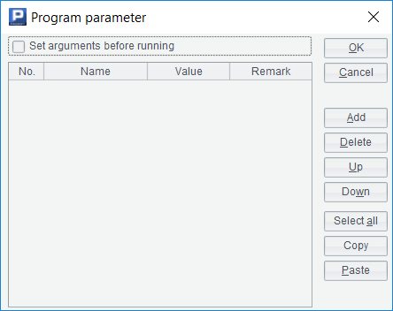
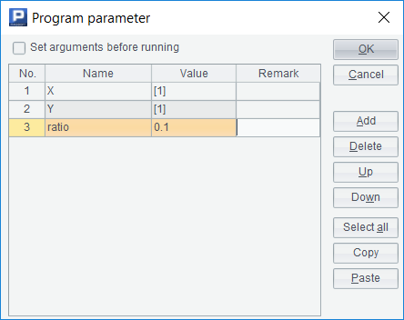
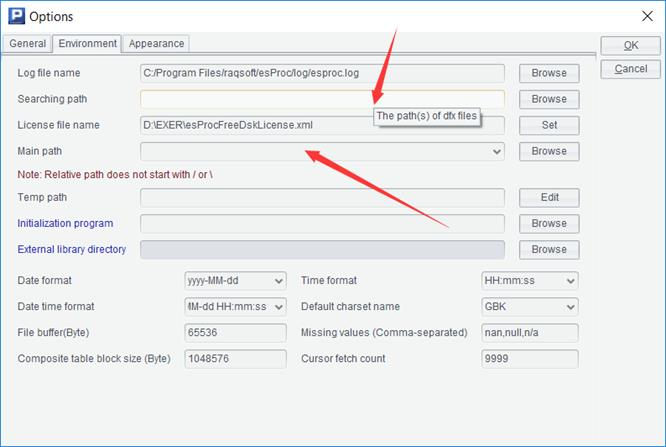

Until now, we’ve been writing code in a cellset. This cellset can be saved as a file with the extension .dfx, which we call a script.
Now we have learned to write custom functions that are called repeatedly, but this function can only be used in one script. After creating a new script, we have to copy it again. Unlike library functions, it can be used in any script.
How to achieve this effect of a library function?
SPL provides a function to call another script in a script. Let's take the example of the code that calculates the outliers to illustrate how to do this.
First, create a new script, and then use the parameter function under the program menu to pop up such a dialog box:

First fill in the parameters of the script to be called here. Suppose that this script will receive the coordinates of a batch of points as parameters, calculate the sequence of outliers and return it. We design three parameters: X is a sequence, storing abscissas; Y is a sequence of the same length as X, which stores ordinates; ratio is a proportion, which indicates how many proportion of the points (sequence numbers) with the largest distance are taken as outliers.
The completed dialog box will look like this:

The value column refers to the default value. When calling this script, if no parameter is input, this default value will be used. Here we just write a few.
Now write the code in the cell:
|
|
A |
B |
C |
D |
|
1 |
=X.(Y.sum( func(A3,X(X.#),X(#),Y(X.#),Y(#)))) |
|||
|
2 |
return A1.psort@z().to(int(X.len()*ratio)) |
|||
|
3 |
func |
|
|
|
|
4 |
|
return sqrt((A3-B3)*(A3-B3)+(C3-D3)*(C3-D3)) |
||
The script also uses the return statement to return the result. In the script, the parameters can be directly used as the variable names. In fact, if we execute it, we can see the parameters in the variable table at the bottom right. For SPL, script parameters and named variables are the same thing.
Cell A1 uses the variable name of the parameters to determine the level of # in a multi-layer loop function.
Save the script and give it a name, such as outlier.dfx. Now, with a new script, we can call the script we just wrote.
|
|
A |
|
1 |
100 |
|
2 |
>rand@s(0) |
|
3 |
=call("outlier.dfx", A1.(rand()),A1.(rand()),0.1) |
|
4 |
>rand@s(0) |
|
5 |
=call("outlier.dfx", A1.(rand()),A1.(rand())) |
Use the call() function to call another script and get the return value.
It should be noted that this new script needs to be saved and stored in the same path as outlier.dfx. SPL will generally look for the called script in the path of the current script. If the script has not been saved, there will be no path. If the path is wrong, it is likely that it will not be found.
We have a default value when writing outlier.dfx, so A5 can omit one parameter, and because we’ve used the rand@s(), A3 and A5 will return the same result.
If the script still reports an error that it cann’t find the outlier.dfx, it may be because the searching path or main path is not written correctly. Use the options function under the tools menu to open the dialog box and switch to the environment page. The searching path may have been filled with inappropriate content, and the called script will be searched under this path first.

The advantage is that we can write some common scripts and put them in this path, so a script stored in any path can call these common scripts, and there is no need to copy the called scripts to the path of the calling scripts.
If the called script still can not be found when the searching path is empty, there may be an error in the main path. For file names (including script names) that use relative paths, esProc first searches the main path. When the main path is filled with blank, it will search the path of the current script. This rule is a bit complicated, and it is set for developing complex applications with many scripts.
SPL also provides a register() function to register a script as an ordinary function.
|
|
A |
|
1 |
>register("outlier","outlier.dfx") |
|
2 |
100 |
|
3 |
=outlier(A2.(rand()),A2.(rand()),0.1) |
When registering a self writing script as a function, it is better to use the absolute path or put the script into the searching path, otherwise it may not be found because of the different paths to call the script. Registered functions are valid for all scripts, not only for the current script. Repeated registration will replace the original.
We can use a script to register other scripts that are commonly used to be called as our own functions. In the future, every time we start esProc and execute this script to register other scripts, it is equivalent to adding many library functions.
The contents of the first three chapters, together with this chapter, constitute the vast majority of process control mechanisms of modern programming languages (object-oriented languages also have overload mechanisms, but the content is abstruse, which is not covered in this book). These are the ways to control the flow of a program. Different programming languages may use different reserved words, but there is not much difference. When learning a new programming language, these flow control statements and data types are the basic contents.
After this, the focus will shift to richer data types and corresponding functions, such as the sequences we've been exposed to before. Different programming languages have different usages, and they have different emphases in data types and functions. Different programming languages have little difference in process control ability, but the difference in data types and functions may be very huge. It can be said that data types and related operations (functions are also operations) constitute the fundamental style of a programming language.